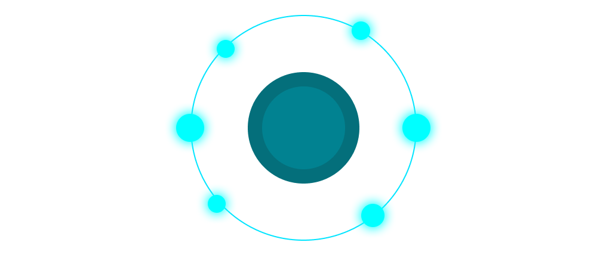
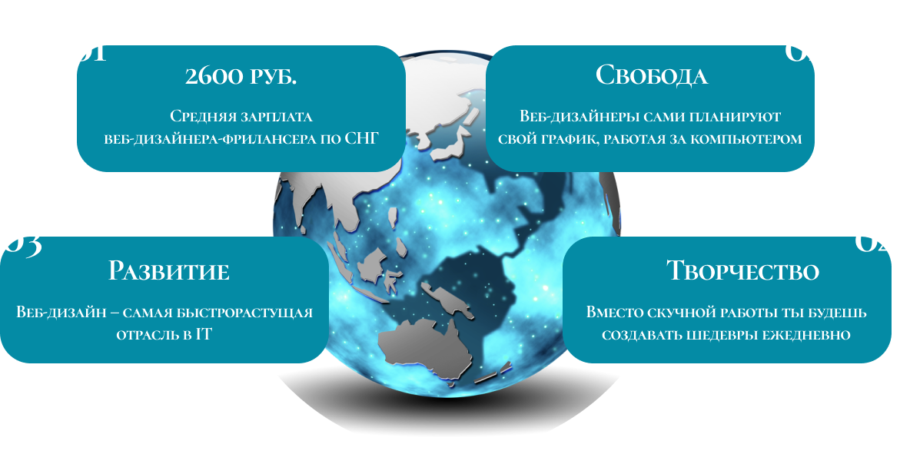

ВЕБ-ДИЗАЙН
Профессия мечты
Что такое веб-дизайн
В начале нулевых веб-дизайн и веб-разработка зачастую шли нераздельно. Но технически веб-дизайн — это подкатегория веб-разработки, которая в первую очередь относится к видимой части сайтов, онлайн-сервисов и приложений.
Веб-дизайн — проектирование и визуализация продуктов, их макетов и прототипов.
Аспекты веб-дизайна
Этапы работы веб-дизайнера
Встреча с клиентом и составление технического задания.
Обсуждение решений с командой.
Проектирование логической структуры сайта.
Создание динамичного прототипа.
Получение обратной связи от заказчика.
Визуальное оформление сайта: подбор шрифтов, цветовой палитры, создание анимации, подбор изображений и иллюстраций, вёрстка текста.
Рабочий макет сайта и его тестирование.
Веб-разработка, запуск сайта и анализ его работы по метрикам.
Почему веб-дизайнер
Это выгодно, престижно и привлекательно
 \